Khí Đường Mật
I. Đại cương
– Khí đường mật (pneumobilia hoặc aerobilia) là tình trạng tích tụ khí bất thường trong hệ thống đường mật trong gan, ngoài gan hoặc túi mật, phản ánh một bệnh lý nền hoặc trạng thái sau can thiệp đường mật.
– Căn nguyên: Khí xâm nhập hoặc hình thành trong đường mật qua các nhóm cơ chế chính gồm mất chức năng cơ vòng Oddi do can thiệp, rò mật – ống tiêu hóa tự phát, nhiễm trùng đường mật sinh hơi và các nguyên nhân hiếm gặp khác:
+ Mất chức năng cơ vòng Oddi hoặc thông mật – ruột do can thiệp (thường gặp nhất): cắt cơ vòng Oddi, nội soi mật tụy ngược dòng (ERCP), đặt stent, phẫu thuật nối mật – ruột, dẫn lưu hoặc chụp đường mật trực tiếp.
+ Rò mật – ống tiêu hóa tự phát: thủng ổ loét tá tràng vào đường mật, sỏi mật ăn mòn gây tắc ruột do sỏi mật hoặc u ác tính vùng đầu tụy – tá tràng xâm lấn.
+ Nhiễm trùng đường mật sinh hơi: viêm đường mật cấp, viêm túi mật khí thũng hoặc áp xe gan mật do vi khuẩn kỵ khí sinh hơi, thường gặp ở người đái tháo đường.
+ Nguyên nhân ít gặp khác: chấn thương bụng kín hoặc xuyên thấu gây rò mật – ruột, rò phế quản – mật hoặc bất sản cơ vòng Oddi bẩm sinh.
– Cơ chế bệnh sinh: Sự chênh lệch áp lực giữa ống tiêu hóa và đường mật kết hợp hướng lưu thông dịch mật quyết định sự phân bố khí đặc trưng trên hình ảnh:
+ Khí từ tá tràng trào ngược vào đường mật khi áp lực ống tiêu hóa vượt áp lực đường mật do mất hàng rào cơ vòng Oddi hoặc lỗ rò mật – ruột.
+ Khí sinh tại chỗ trong lòng đường mật ứ trệ do vi khuẩn kỵ khí lên men mà không cần đường thông với ống tiêu hóa.
+ Dòng chảy dịch mật hướng tâm về rốn gan đẩy khí tập trung ở các nhánh trung tâm và dừng lại cách bao gan > 2 cm.
+ Ở tư thế nằm ngửa, khí ưu thế ở đường mật thùy gan trái do vị trí giải phẫu nằm cao và hướng ra trước hơn thùy gan phải.
– Biểu hiện lâm sàng: Biểu hiện lâm sàng không đặc hiệu và phụ thuộc hoàn toàn vào nguyên nhân nền gây khí đường mật:
+ Các trường hợp sau phẫu thuật nối mật – ruột hoặc nội soi đường mật thường lành tính và không gây triệu chứng lâm sàng.
+ Các trường hợp do nhiễm trùng sinh hơi, thủng loét hoặc tắc ruột do sỏi mật thường biểu hiện cấp cứu với sốt cao, đau hạ sườn phải, vàng da hoặc tắc ruột.
– Vai trò CĐHA: Chẩn đoán hình ảnh giữ vai trò then chốt trong phát hiện khí đường mật, phân biệt tổn thương giả và xác định nguyên nhân nền:
+ Phát hiện chính xác khí đường mật và phân biệt với khí tĩnh mạch cửa, sỏi nhỏ đường mật hoặc vôi hóa nhu mô gan.
+ Xác định nguyên nhân và biến chứng kèm theo như lỗ rò mật – ruột, sỏi mật lạc chỗ gây tắc ruột hoặc áp xe gan để định hướng xử trí.
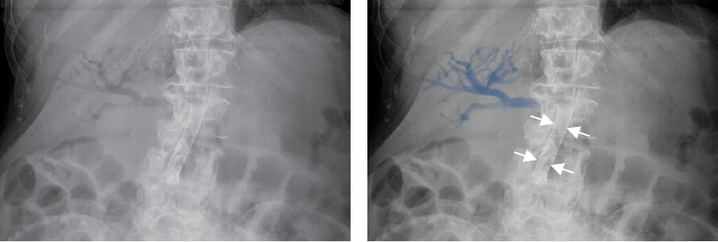
© Chẩn Đoán Hình Ảnh Xray.vn
II. Giải phẫu
* Đường mật trong gan
– Cấu trúc vi thể và sự hình thành: Hệ thống đường mật khởi đầu từ các tiểu quản mật và hợp lưu dần từ ngoại vi tiểu thùy về rốn gan:
+ Tiểu quản mật không có thành riêng mà được giới hạn trực tiếp bởi màng của 2–3 tế bào gan lân cận.
+ Các tiểu quản mật đổ vào tiểu ống mật ở ngoại vi tiểu thùy gan, nơi bắt đầu có thành cấu trúc từ tế bào biểu mô đường mật.
+ Các tiểu ống mật tiếp tục hợp lưu tuần tự thành ống gian tiểu thùy, ống hạ phân thùy và ống phân thùy.
+ Thành các ống mật lớn được lót bởi lớp biểu mô đường mật ở mặt trong và bao bọc bởi lớp mô xơ ở mặt ngoài.
– Phân nhánh và liên quan bộ ba khoảng cửa: Các nhánh đường mật trong gan đi cùng nhánh tĩnh mạch cửa và động mạch gan trong bao Glisson theo từng phân thùy:
+ Trong từng hạ phân thùy, nhánh đường mật đi song hành cùng nhánh tĩnh mạch cửa và động mạch gan nên mang tên hạ phân thùy tương ứng, có thể nằm trước hoặc sau tĩnh mạch cửa.
+ Ống gan phải hợp thành từ ống phân thùy trước (hạ phân thùy V, VIII) và ống phân thùy sau (hạ phân thùy VI, VII).
+ Ống gan trái hợp thành từ các nhánh hạ phân thùy II, III, IV và có đường đi dài, nằm ngang hướng ra trước ở vùng rốn gan.
+ Các nhánh dẫn lưu thùy đuôi (hạ phân thùy I) thường đổ độc lập vào cả ống gan phải và ống gan trái.
+ Ở mức rốn gan, ống gan phải và ống gan trái thường nằm phía trước nhánh tương ứng của tĩnh mạch cửa.
– Kích thước chuẩn trên CĐHA: Đánh giá khẩu kính đường mật trong gan giúp phân biệt trạng thái bình thường với tình trạng giãn đường mật bệnh lý:
+ Các nhánh đường mật trong gan ngoại vi bình thường có đường kính ≤ 2 mm hoặc < 40% khẩu kính nhánh tĩnh mạch cửa đi kèm.
+ Ống gan phải và ống gan trái ở mức rốn gan bình thường có đường kính ≤ 2–3 mm.
– Biến thể giải phẫu thường gặp: Nhận diện các biến thể phân nhánh đường mật trong gan giúp phòng tránh tai biến khi phẫu thuật hoặc can thiệp đường mật:
+ Ống phân thùy sau phải đổ lạc chỗ vào ống gan trái hoặc ống gan chung là biến thể thường gặp nhất của đường mật trong gan.
+ Hội lưu chập ba gồm ống phân thùy trước phải, ống phân thùy sau phải và ống gan trái hợp lưu đồng thời tại rốn gan cũng thường gặp.
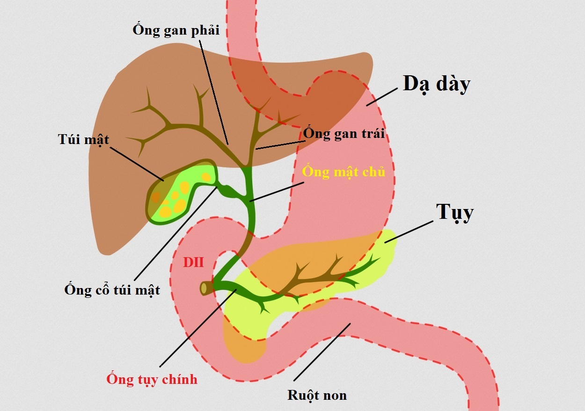
* Đường mật ngoài gan
– Thành phần và đường đi: Hệ thống đường mật ngoài gan dẫn mật từ rốn gan xuống tá tràng, nằm trong bộ ba khoảng cửa:
+ Ống gan phải và ống gan trái ra khỏi rốn gan, hợp lưu ở vị trí thấp hơn ngã ba tĩnh mạch cửa tạo thành ống gan chung.
+ Ống gan chung chạy xuống dưới trong bờ tự do mạc nối nhỏ rồi hợp với ống túi mật tạo thành ống mật chủ.
+ Ống mật chủ chạy xuống dưới, ra sau rồi uốn sang phải qua sau đầu tụy để đổ vào thành sau trong đoạn D2 tá tràng.
+ Trong dây chằng gan – tá tràng, ống mật chủ nằm phía trước bên phải tĩnh mạch cửa và bên phải động mạch gan riêng.
– Phân đoạn ống mật chủ: Ống mật chủ dài khoảng 6–8 cm và được chia thành 4 đoạn giải phẫu liên tiếp từ trên xuống dưới:
+ Đoạn trên tá tràng nằm trong bờ tự do bên phải của mạc nối nhỏ, phía trước lỗ mạc nối.
+ Đoạn sau tá tràng chạy phía sau đoạn D1 tá tràng, nằm trước tĩnh mạch chủ dưới và bên phải tĩnh mạch cửa.
+ Đoạn sau đầu tụy nằm trong rãnh mặt sau ngoài hoặc xuyên nhu mô đầu tụy, hướng chếch xuống dưới và sang phải.
+ Đoạn trong thành tá tràng xuyên chéo thành sau trong D2, hợp lưu ống tụy chính thành bóng gan – tụy (bóng Vater) đổ vào nhú tá lớn.
– Cấu trúc liên quan và sinh lý van: Túi mật, ống túi mật và cơ vòng Oddi điều hòa áp lực và ngăn trào ngược dịch tiêu hóa:
+ Túi mật nằm ở hố túi mật mặt tạng gan, nối với đường mật chính qua ống túi mật có các nếp xoắn niêm mạc.
+ Cơ vòng Oddi bao quanh đoạn cuối ống mật chủ, ống tụy chính và bóng gan – tụy, kiểm soát bài tiết mật tụy vào tá tràng.
+ Cơ vòng Oddi duy trì chênh lệch áp lực dương trong đường mật, ngăn khí và dịch tá tràng trào ngược lên cây đường mật.
– Kích thước chuẩn trên CĐHA: Đánh giá khẩu kính đường mật ngoài gan cần đối chiếu với tuổi và tiền sử phẫu thuật túi mật:
+ Ống gan chung bình thường có đường kính 4–5 mm; ống mật chủ ở người trưởng thành trẻ có đường kính ≤ 6 mm.
+ Khẩu kính ống mật chủ tăng sinh lý ở người > 60 tuổi (thêm 1 mm mỗi thập niên) hoặc sau cắt túi mật tới ≤ 8–10 mm.
III. Chẩn đoán x-quang
– Đặc điểm hình ảnh X-quang: Khí đường mật biểu hiện bằng các bóng hoặc dải sáng phân nhánh vùng rốn gan, phản ánh hướng lưu thông dịch mật về trung tâm:
+ Các bóng khí nhỏ hoặc dải sáng giảm đậm độ phân nhánh hình chữ Y hay hình cây lấp đầy đường mật trong và ngoài gan vùng rốn gan.
+ Các nhánh khí hội tụ về trung tâm và dừng lại cách bao gan > 2 cm do dòng chảy dịch mật hướng tâm đẩy khí khỏi vùng ngoại vi.
+ Ở tư thế đứng hoặc nằm nghiêng trái, có thể thấy mức khí – dịch trong đường mật giãn, túi mật hoặc dải sáng thẳng đứng dọc ống mật chủ.
– Dấu hiệu bệnh lý phối hợp: Phim X-quang bụng không chuẩn bị giúp phát hiện đồng thời bộ ba Rigler gợi ý tắc ruột do sỏi mật:
+ Bộ ba Rigler gồm khí đường mật, hình ảnh tắc ruột non cơ học và sỏi mật cản quang lạc chỗ trong lòng ruột (thường ở hố chậu phải).
– Phân biệt và cạm bẫy trên X-quang: Khí đường mật cần được đối chiếu vị trí giải phẫu và hình thái với các tổn thương chứa khí hoặc vôi hóa vùng hạ sườn phải:
+ Viêm túi mật khí thũng (emphysematous cholecystitis) tạo vòng hoặc liềm khí viền quanh thành túi mật kèm mức khí – dịch trong lòng túi mật, khác với dải khí phân nhánh vùng rốn gan.
+ Khí tĩnh mạch cửa biểu hiện bằng các dải sáng mảnh phân nhánh ra tận sát bao gan < 2 cm do dòng máu cửa hướng ly tâm.
+ Cạm bẫy thường gặp là nhầm khí đường mật lượng ít với hơi trong hành tá tràng hoặc đại tràng góc gan chồng hình; cần đối chiếu phim tư thế nghiêng hoặc chuyển sang siêu âm, cắt lớp vi tính khi nghi ngờ.


IV. Chẩn đoán siêu âm
– Đặc điểm hình ảnh siêu âm: Khí đường mật tạo giao diện phản xạ âm mạnh trong lòng cây đường mật vùng trung tâm, đi kèm các xảo ảnh đặc trưng phía sau:
+ Các chấm, nốt hoặc dải tăng âm sáng rực phân nhánh theo đường mật trung tâm, ưu thế ở thùy gan trái và dừng lại cách bao gan > 2 cm.
+ Phía sau cấu trúc tăng âm là bóng lưng bẩn (dirty shadowing) mờ đục kèm xảo ảnh đuôi sao chổi hoặc dội âm nhiều lần do phản xạ sóng âm lặp lại giữa các bọt khí.
+ Khi lượng khí nhiều, khí lấp đầy các nhánh đường mật lớn tạo dải tăng âm liên tục song hành phía trước nhánh tĩnh mạch cửa tương ứng.
+ Khí đường mật có tính di động và thay đổi hình dạng theo thời gian thực khi ép đầu dò hoặc thay đổi tư thế bệnh nhân từ nằm ngửa sang nghiêng trái.
– Phân biệt: Trên siêu âm, hình ảnh tăng âm của khí đường mật cần được đối chiếu trực tiếp với sỏi đường mật trong gan và khí tĩnh mạch cửa:
+ Sỏi đường mật trong gan tạo nốt tăng âm khu trú kèm bóng lưng sạch sắc nét phía sau, cố định theo đường mật giãn và không dịch chuyển theo tư thế.
+ Khí tĩnh mạch cửa biểu hiện bằng các chấm tăng âm nhỏ di chuyển nhanh theo dòng máu hướng ly tâm ra tận sát bao gan < 2 cm, tạo các đỉnh nhọn xảo ảnh trên phổ Doppler.
– Cạm bẫy: Khí đường mật lượng nhiều gây bóng lưng bẩn dày đặc có thể che khuất toàn bộ nhu mô gan phía sau hoặc làm nhầm với vôi hóa nhu mô gan và nang sán vôi hóa; cần thay đổi cửa sổ khảo sát, dùng đầu dò tần số thấp hoặc đối chiếu trên cắt lớp vi tính.
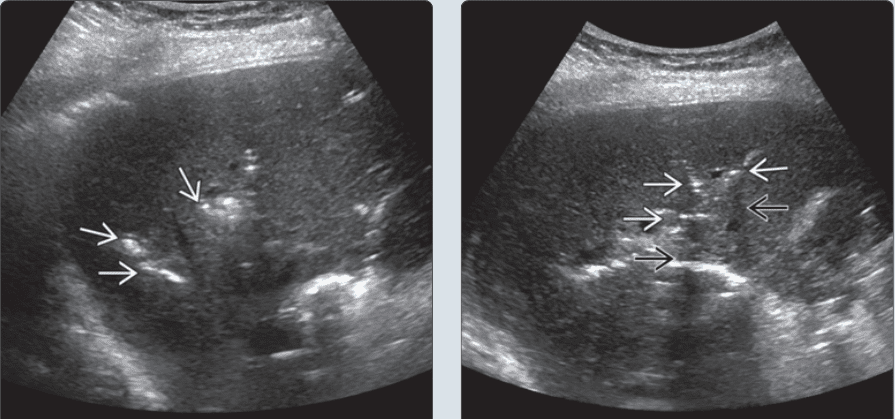
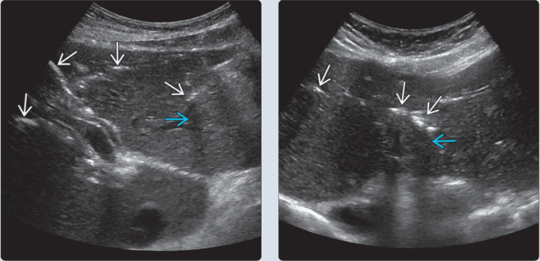
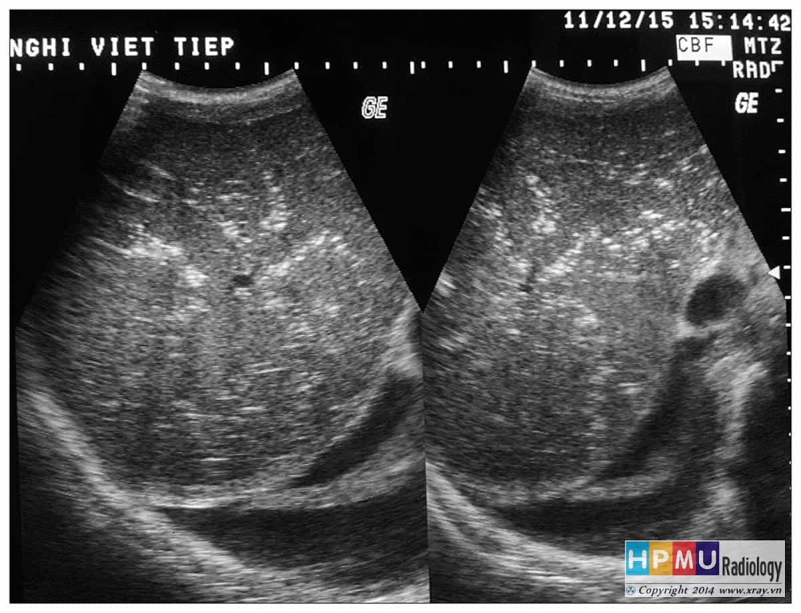
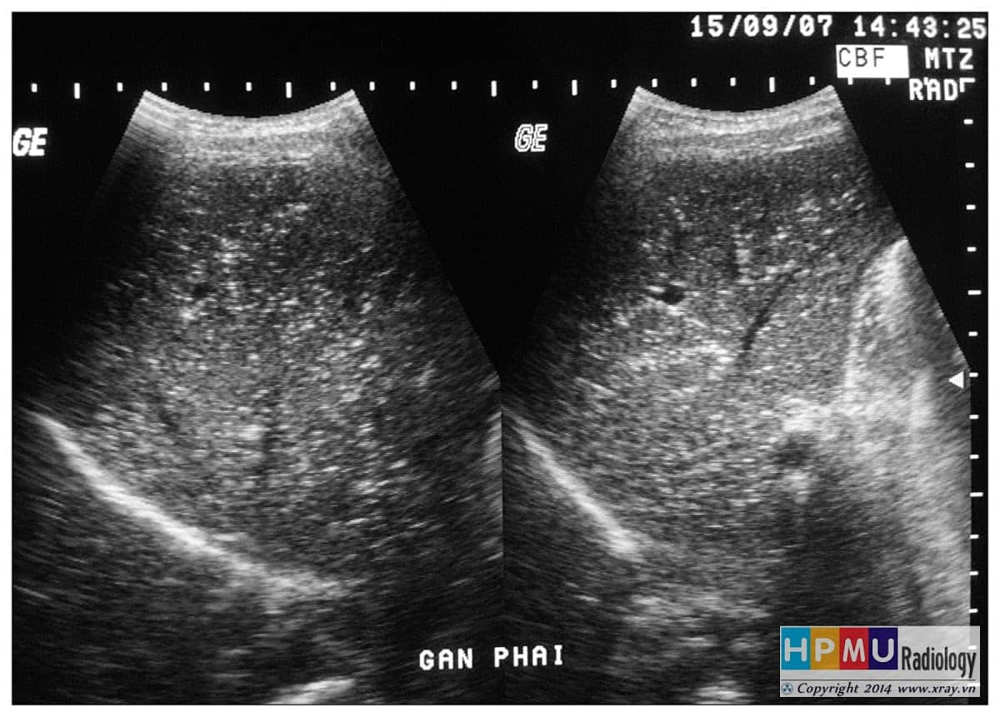
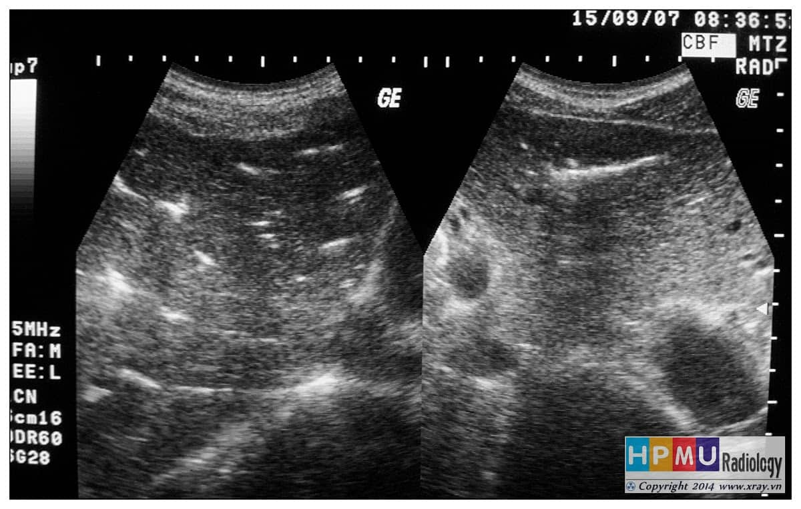
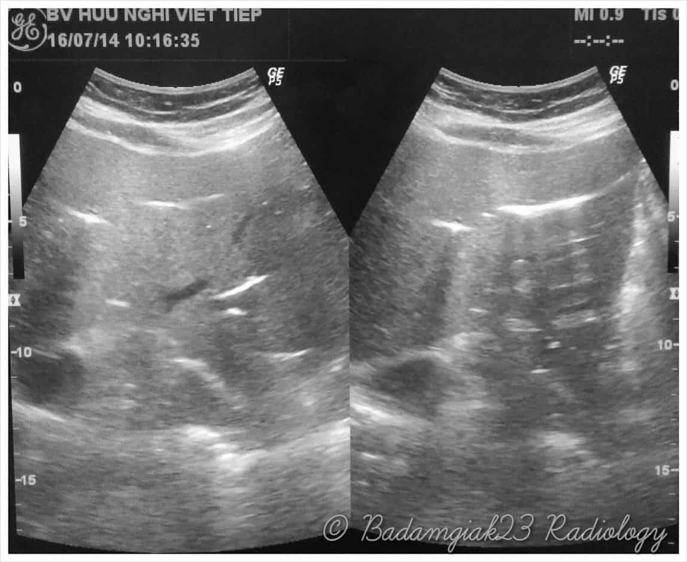
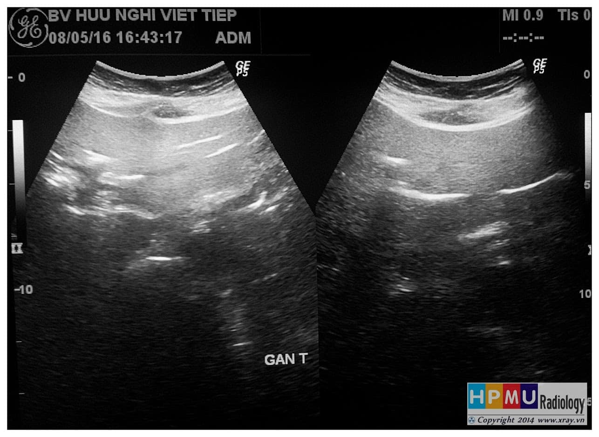
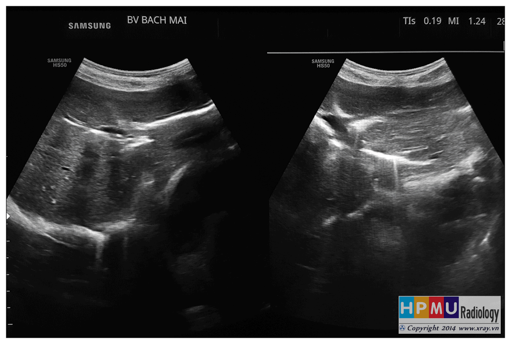
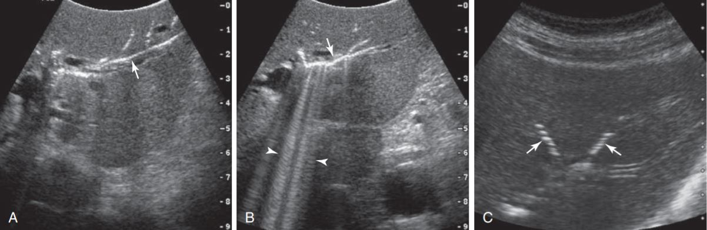
=> Case lâm sàng 1:
=> Case lâm sàng 2:
=> Case lâm sàng 3:
=> Case lâm sàng 4:
=> Case lâm sàng 5:
V. Chẩn đoán CLVT
– Đặc điểm hình ảnh cắt lớp vi tính: Cắt lớp vi tính là phương tiện tiêu chuẩn vàng nhờ độ nhạy cao và khả năng định vị chính xác khí theo giải phẫu cây đường mật:
+ Các bóng hoặc dải giảm tỷ trọng khí rất thấp (khoảng -1000 HU) phân nhánh theo đường mật trong và ngoài gan, quan sát rõ nhất trên cửa sổ phổi hoặc cửa sổ gan rộng.
+ Khí tập trung ở các nhánh đường mật vùng rốn gan và dừng lại cách bao gan > 2 cm do dòng chảy dịch mật hướng tâm.
+ Trên tư thế nằm ngửa, khí ưu thế ở đường mật thùy gan trái (đặc biệt phân thùy bên) và mặt trước lòng túi mật hoặc ống mật chủ.
+ Mức khí – dịch nằm ngang xuất hiện rõ trong lòng túi mật, ống mật chủ giãn hoặc ổ áp xe đường mật.
– Dấu hiệu bệnh lý nền phối hợp: Cắt lớp vi tính cho phép truy tìm trực tiếp nguyên nhân và biến chứng đi kèm khí đường mật trên các mặt phẳng tái tạo đa bình diện:
+ Phát hiện lỗ rò mật – ruột biểu hiện qua mất liên tục thành túi mật hoặc ống mật chủ dính sát tá tràng, đại tràng góc gan kèm đường hầm khí thông thương.
+ Xác định tắc ruột do sỏi mật qua tam chứng Rigler trên cắt lớp vi tính gồm khí đường mật, quai ruột non giãn ứ dịch và sỏi mật lạc chỗ kẹt trong lòng ruột.
+ Đánh giá biến chứng nhiễm trùng như dày thành đường mật ngấm thuốc, thâm nhiễm mỡ quanh đường mật, áp xe gan hoặc khí trong thành túi mật.
– Cạm bẫy: Lượng khí đường mật rất ít trong các nhánh nhỏ có thể bị bỏ sót trên cửa sổ mô mềm thông thường do hiệu ứng thể tích từng phần; cần mở rộng cửa sổ khảo sát (cửa sổ phổi) và đo tỷ trọng ROI để xác nhận.
=> Case lâm sàng 1:
=> Case lâm sàng 2:
VI. Chẩn đoán phân biệt
* Khí tĩnh mạch cửa
– Đặc điểm phân biệt: Khí tĩnh mạch cửa (portal venous gas) phân bố chủ yếu ở vùng ngoại vi gan, đối lập với khí đường mật tập trung tại vùng trung tâm rốn gan:
+ Khí tĩnh mạch cửa theo dòng máu cửa hướng gan (hepatopetal) đẩy ra các tiểu tĩnh mạch cửa ngoại vi, dừng lại sát bao gan < 2 cm, trong khi khí đường mật bị dòng mật hướng tâm giữ lại cách bao gan > 2 cm.
+ Trên siêu âm, khí tĩnh mạch cửa là các chấm tăng âm nhỏ di chuyển nhanh theo dòng máu về ngoại vi và tạo các đỉnh nhọn xảo ảnh hai chiều trên phổ Doppler, khác với khí đường mật di động chậm theo tư thế và không có tín hiệu dòng chảy mạch máu.
+ Trên cắt lớp vi tính, khí tĩnh mạch cửa tạo các dải khí mảnh phân nhánh đều ra sát bao gan và có thể thấy trực tiếp khí trong thân tĩnh mạch cửa hoặc tĩnh mạch mạc treo tràng trên.
– Bối cảnh bệnh lý nền: Khí tĩnh mạch cửa thường là dấu hiệu cảnh báo bệnh lý ống tiêu hóa nặng cần xử trí cấp cứu:
+ Thường gặp nhất trong thiếu máu hoặc nhồi máu mạc treo ruột giai đoạn muộn, đi kèm hình ảnh khí trong thành ruột (pneumatosis intestinalis), quai ruột giãn không ngấm thuốc và khí trong các nhánh tĩnh mạch mạc treo.
+ Các nguyên nhân khác gồm viêm ruột hoại tử, loét dạ dày – tá tràng thủng, viêm túi thừa biến chứng hoặc sau thủ thuật nội soi tiêu hóa.
– Điểm chồng lấp và cạm bẫy: Khí tĩnh mạch cửa và khí đường mật có thể đồng thời xuất hiện trong một số tình huống nhiễm trùng ổ bụng nặng hoặc sau can thiệp, hoặc gây nhầm lẫn khi lượng khí ít:
+ Khi cả hai cùng tồn tại, cần đánh giá đồng thời phân bố trung tâm rốn gan so với ngoại vi sát bao gan < 2 cm và truy tìm khí trong thân tĩnh mạch cửa – mạc treo trên cắt lớp vi tính.

* Sỏi nhỏ đường mật
– Đặc điểm phân biệt: Sỏi nhỏ đường mật trong gan (intrahepatic biliary calculi) thường khu trú cố định trong một nhánh đường mật giãn, đối lập với khí đường mật phân nhánh lan tỏa và di động ở vùng trung tâm:
+ Sỏi thường tập trung thành từng viên hoặc từng đám đúc khuôn trong lòng một nhánh đường mật giãn khu trú (ưu thế hạ phân thùy sau phải hoặc phân thùy bên trái), trong khi khí đường mật phân bố lan tỏa nhiều nhánh trung tâm và thay đổi vị trí theo tư thế.
+ Trên siêu âm, sỏi tạo cấu trúc tăng âm dạng khối hoặc đám cố định với bờ cong rõ và bóng lưng sạch sắc nét phía sau trên nhiều mặt cắt, khác với khí đường mật tạo dải tăng âm sáng rực kèm bóng lưng bẩn và xảo ảnh đuôi sao chổi.
+ Trên cắt lớp vi tính, sỏi có tỷ trọng cao từ đồng tỷ trọng đến tăng tỷ trọng vôi hóa (> 40–1000 HU), đối lập hoàn toàn với tỷ trọng khí cực thấp khoảng -1000 HU của khí đường mật.
– Bối cảnh bệnh lý nền: Sỏi đường mật trong gan thường gắn liền với tình trạng hẹp đường mật, dị tật đường mật hoặc nhiễm ký sinh trùng đường mật:
+ Thường đi kèm dày thành đường mật mạn tính, teo nhu mô phân thùy gan tương ứng và tiền sử viêm đường mật tái diễn nhiều đợt.
– Điểm chồng lấp và cạm bẫy:
+ Sỏi bùn cô đặc không vôi hóa, sỏi cholesterol kích thước nhỏ dưới ngưỡng phân giải hoặc khí và sỏi cùng tồn tại trong đường mật giãn dễ gây nhầm lẫn trên siêu âm.
+ Khí đường mật lượng nhiều có thể che khuất sỏi phía sau bằng bóng lưng bẩn, hoặc sỏi nhỏ không có bóng lưng rõ bị nhầm với bọt khí; khi nghi ngờ cần chụp cắt lớp vi tính không tiêm thuốc cản quang kết hợp đo tỷ trọng ROI để phân định chính xác.
* Viêm túi mật khí thũng
– Đặc điểm phân biệt: Viêm túi mật khí thũng (emphysematous cholecystitis) đặc trưng bởi khí sinh ra trong thành và lòng túi mật do nhiễm trùng hoại tử sinh hơi, khác với khí đường mật thuần túy nằm trong lòng cây đường mật:
+ Khí phân bố khu trú theo giải phẫu hố túi mật dưới dạng vòng, liềm khí viền quanh thành túi mật hoặc mức khí – dịch trong lòng túi mật, trong khi khí đường mật phân nhánh dọc theo các ống mật vùng rốn gan.
+ Trên siêu âm, khí trong thành túi mật tạo dải tăng âm hình cung kèm bóng lưng bẩn dày đặc theo bờ túi mật và thành túi mật dày phù nề, không di chuyển phân nhánh lên cây đường mật trong gan khi thay đổi tư thế.
+ Trên cắt lớp vi tính, khí tách lớp trong thành túi mật kết hợp dấu hiệu viêm túi mật cấp nặng như thành túi mật dày, thâm nhiễm mỡ quanh túi mật và không ngấm thuốc thành do hoại tử thiếu máu.
– Bối cảnh bệnh lý nền: Bệnh lý cấp cứu ngoại khoa nặng do tắc nghẽn động mạch túi mật và nhiễm vi khuẩn sinh hơi (như Clostridium perfringens, Escherichia coli):
+ Thường gặp ở bệnh nhân nam giới lớn tuổi, có tiền sử đái tháo đường hoặc bệnh lý mạch máu ngoại biên, và thường không kèm sỏi túi mật.
– Điểm chồng lấp và cạm bẫy: Khí trong lòng túi mật đơn thuần do trào ngược qua ống túi mật ở bệnh nhân đã cắt cơ vòng Oddi hoặc nối mật – ruột rất dễ nhầm với viêm túi mật khí thũng:
+ Trào ngược khí lành tính vào túi mật không kèm dày thành, không có khí tách lớp trong thành túi mật và không có thâm nhiễm viêm xung quanh.
+ Khoảng 20% trường hợp viêm túi mật khí thũng có thể kèm khí lan ngược lên cây đường mật, do đó cần tìm dấu hiệu khí trong thành túi mật và hoại tử thành túi mật trên cắt lớp vi tính để tránh bỏ sót chỉ định phẫu thuật cấp cứu.


Tài liệu tham khảo
* Hepatic Gas: Widening Spectrum of Causes Detected at CT and US in the Interventional – Priti A. Shah, MD, Steven C. Cunningham, MD, Tara A. Morgan, MD
* Abdominal extra-luminal gas – Is it always gastrointestinal perforation? – M. Barros, L. A. Ferreira, I. Abreu, F. Caseiro Alves; Coimbra/PT
* The travelling stone: Gallstone ileus as an uncommon cause of intestinal obstruction – M. Noriega Collado, C. Medina Vila, M. J. Vasquez Veloza
* Intrahepatic Air: Pneumobilia vs. Portal Venous Gas – A Pate, F Amin, M Nuqui, A Agarwala, A Chendrasekhar
* Pneumobilia: benign or life-threatening – Sherman SC, Tran H
* Gas in the bile ducts (pneumobilia) in emphysematous cholecystitis – WD Harley, RH Kirkpatrick and JT Ferrucci, Jr
* Pneumobilia with multiple air-fluid levels on abdominal radiography: A clincher – Sonal Saran, Sunil Malik, Annu Kharbanda, Yash Sharma